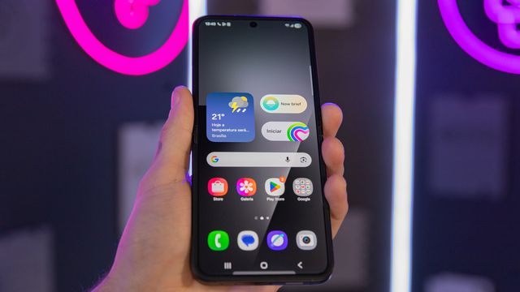

04. Interface de Toque do Usuário (Touch UI)
A Touch UI é projetada para reconhecer interações físicas, como toques, deslizamentos e movimentos de pinça feitos com os dedos.
Tornou-se o padrão absoluto de interação devido à popularização dos smartphones, tablets e totens interativos.
